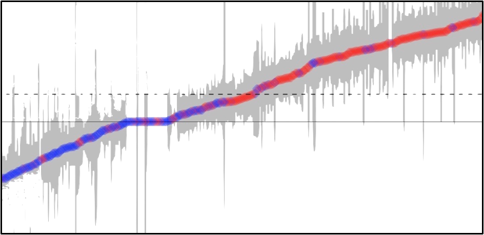

Jurist-Derived Judicial Ideology Scores
A new measure of judicial ideology, drawn from the people who know judges best.
A new measure of judicial ideology, drawn from the people who know judges best.
What JuDJIS measures, how the data behave, and why the expert-sourced approach overcomes long-standing measurement problems.
Read more →
Published and working papers that cite or apply the JuDJIS scores across judicial politics and empirical legal studies.
Read more →The papers developing JuDJIS's theory, its text-analytic method, and the validation evidence behind the scores.
Read more →
Interactive dashboards and downloadable data from the Circuit: Ideology release.
Read more →Press coverage and commentary on the JuDJIS project, including coverage in the National Law Journal and UVA Law.
Read more →